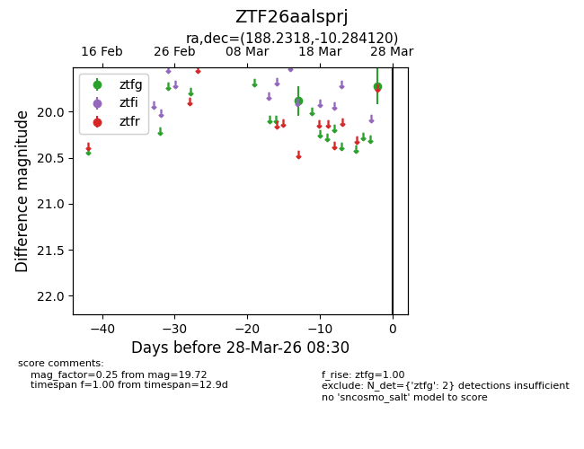
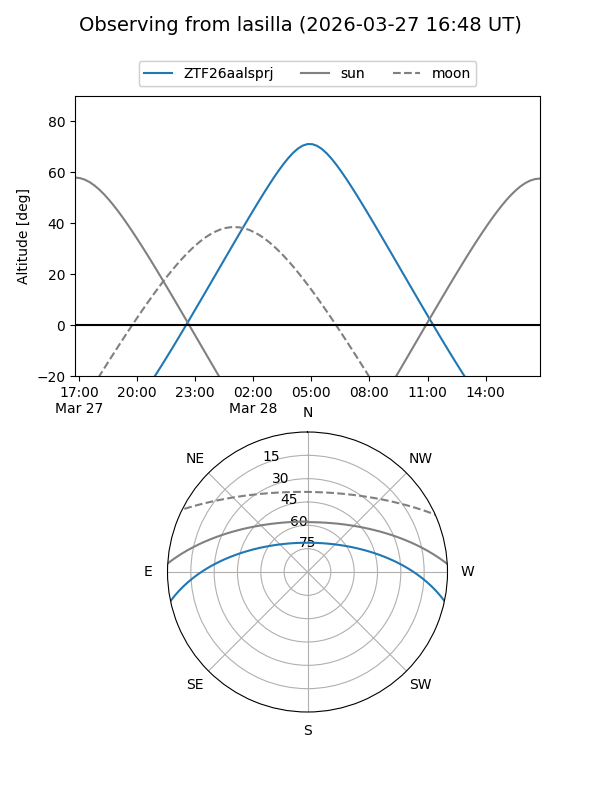
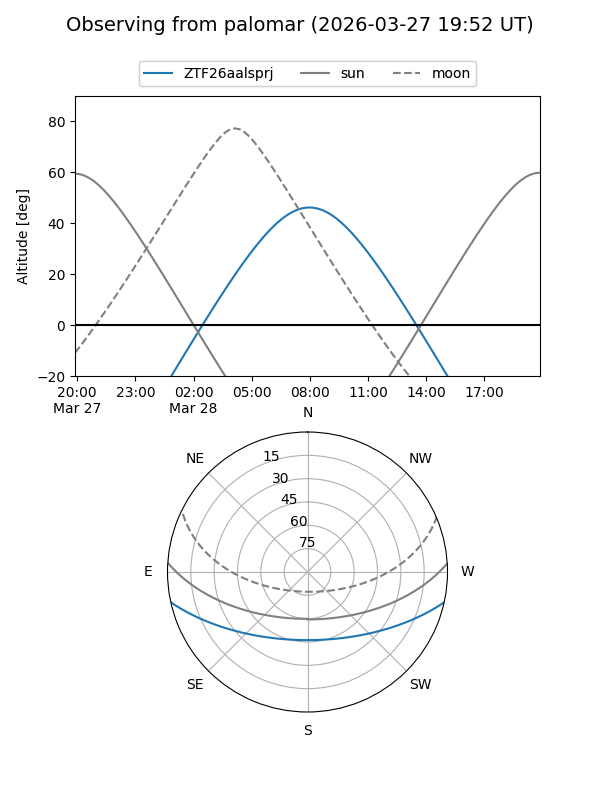

ZTF26aalsprj
Target ZTF26aalsprj at 2026-03-28 08:32
Aliases and brokers:
FINK: link
Lasair: link
ALeRCE: link
alt names
ZTF26aalsprj (ztf,fink_ztf)
Coordinates:
equatorial (ra, dec) = 188.2318,-10.28412
equatorial (HMS+DMS) = 12:32:55.62,-10:17:02.83
galactic (l, b) = (295.4698,+52.31922)
Flags:
Photometry:
last ztfg=19.72
2 ztfg detections
Lightcurve

Visibility


Additional plots